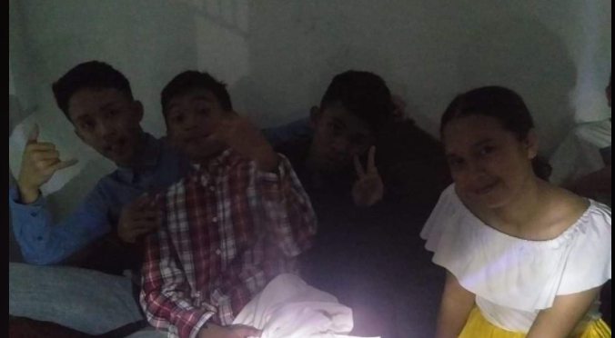
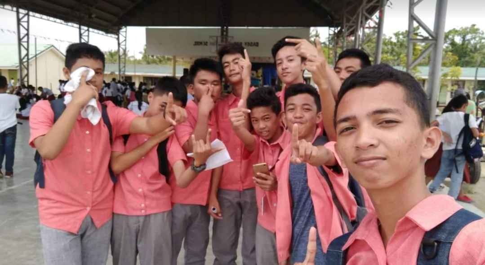
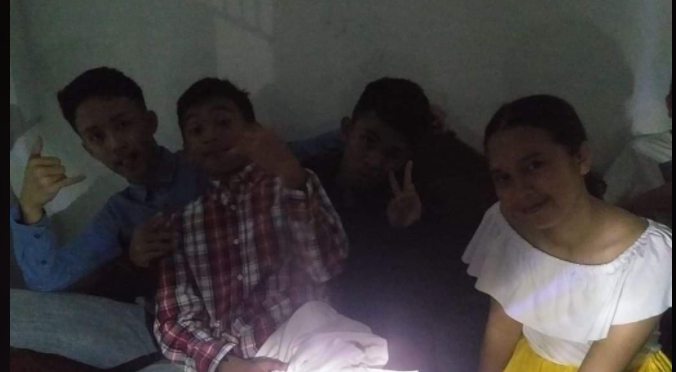
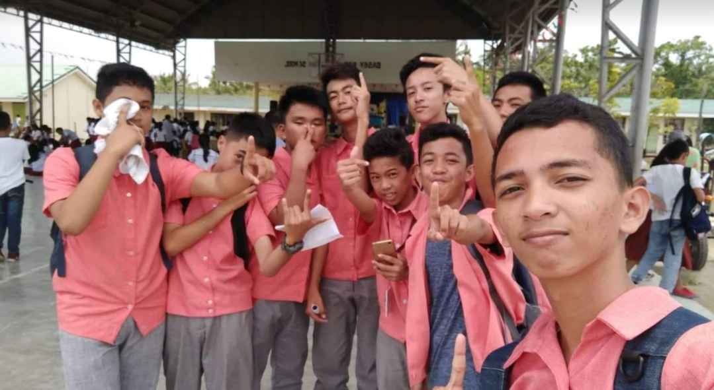
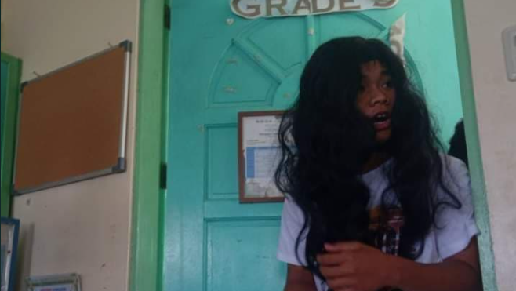
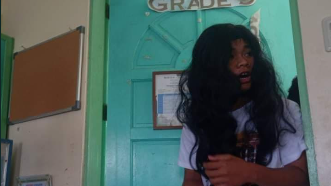
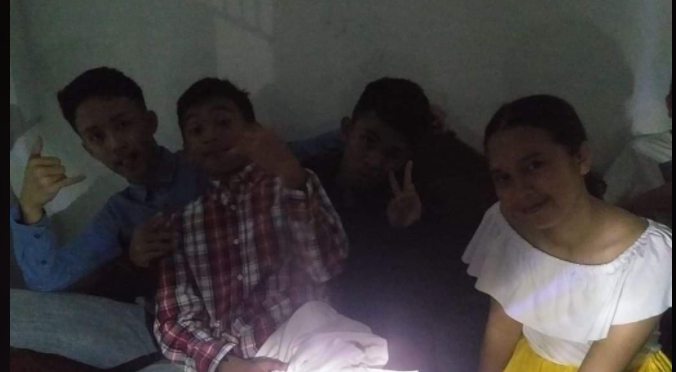
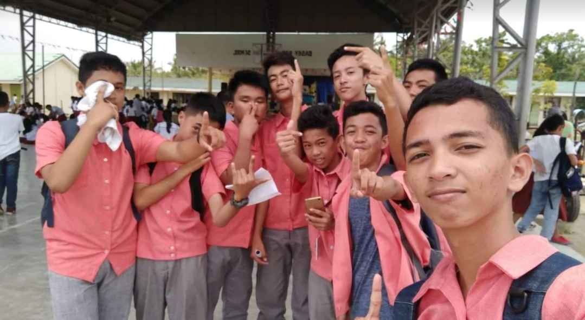
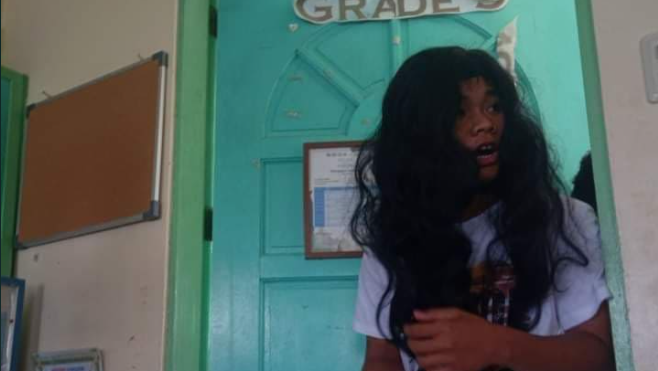

 

OHMS (Our High resistance Maintained in all types of Shapes) There were a group of boys who were treated like slaves. These boys were so frustrated and stressed so they had no choice but to spit out words that were really ungreatful for a being to hear and tell backstories when they are piled. These boys were observing the other behaviors of the criminal and saw that they were not the only one who was treated unequally but also the girls that they know were done. One day, one of the boys said something and really made the other boys realize and that was the thought of him making a hidden organization that would avenge those abused kinds not physically but in other ways. The boys were having their electronics class and the lesson was all about resistance in which they knew who George Simon Ohms back then and what he had fought for his life. The discoverer had struggles in his life relating asto what the boys were feeling. One of the boys spoke and said "why don't we name our group ohms? " all boys glanced to him and cheered quietly "ohms is the symbol for resistance and resistance is what we need for this group" he said. Everyone agreed with him and started a new chapter. Then the boys named the group Ohms and wrote rules and guides. They recruited new members for larger voices and soon in the future their work may lead to something great.
| Name | Age | Position | A.K.A. |
|---|---|---|---|
| Lance Yanos | 16 | Founder/Leader | KALB0SS |
| Cameron Abiertas | 16 | Officer/Designer | photoshop GODZ |
| Kent Abitona | 16 | Officer | The BRAIN of OHMS |
| Eujan Zeta | 16 | Officer | the Philosopher |
| Austin Amascual | 16 | Officer | The GWAPO |
| Junivie Padoc | 17 | Officer | The STREAMER |
| Nathaniel Gadores | 16 | Officer | The Mathematician |
| Gerrel lloyd Distrajo | 16 | Officer | The HOLY BOY |
| Matthew Fabra | 16 | Officer | The DANCER |
| Jake Rabor | 16 | Officer | The OTAKU |
requirements for our recruitment are simple. So if you would like to join our group you must have to complete the things we asked below.
1. ID with a complete name and address
2. Gmail account
3. certificate that utter you passed the test (ohms test)
4. read all the rules (OHMS law)
5. live birth (not original)
If you have the requirements that are needed.
You’ll just have to wait, then we will call you or we’ll just email you
If you haven’t took the test then here is the link
Click herewww.ohmstest.com
GOOD LUCK!
Pursuant to the provisions of section 5(5) of Article VIII of the Constitution, the Brotherhood herby adopts and promulgates the following rules concerning the protection and enforcement of constitutional rights, pleading, practice and procedure in all courts.
SECTION 1. Title of the rules. —These Rules shall be known and cited as the OHMS Law. (1)
SEC. 2. In what situations applicable. – These Rules shall apply among resistors, except otherwise provided by the brotherhood. (n)
SEC. 3. Cases governed. — These Rules shall govern the procedure to be observed in actions, membrary or disciplinary and special proceedings.
(a) A membrary action is one by which a party sues another for the enforcement or protection of right,
or the prevention or redress of a wrong.
A membrary action may either be ordinary or special. Both are governed by the rules of ordinary membrary actions, subject to the specific rules prescribed for a special membrary action. (n)
(b) A disciplinary action is one by which the state prosecutes a person for an act or omission punishable by law. (n)
(c) A special proceeding is a remedy by which a party seeks to establish a status, a right , or a particular fact.
SEC. 4. In what cases not applicable. — These Rules shall not apply election cases, recruitment, outside relationships and anything outside the Brotherhood.
SEC. 5. Commencement of action. — An action is commenced by the filing of the original complaint in the Brotherhood. Id an additional defendant is impleaded in a later pleading, the action is commenced with regard to him on the date of the filing of such later pleading, irrespective of whether the motion of its admission, if necessary, is denied by the court.
SEC. 6. Construction. — These Rules shall be liberally construed in order to promote their objective of securing a just, speedy and inexpensive disposition of every action and proceeding.
this is our medal of honor that the united states of america gave us, because we did a heroic action. we saved the presidents son from the boy that bullied him, by using our organization to defend and avenge the son of the president from the boy that was bullying him
this Nobel Prize that The Royal Swedish gave us is the greatest award that we have achived. we earnd the Nobel Prize because we proved that the black hole is a black hole and this also changed the science world, because of our discovery that A black hole is a region of spacetime where gravity is so strong that nothing—no particles or even electromagnetic radiation such as light—can escape from it. The theory of general relatass can deform spacetime to form a black hole.



you can contac us here-->